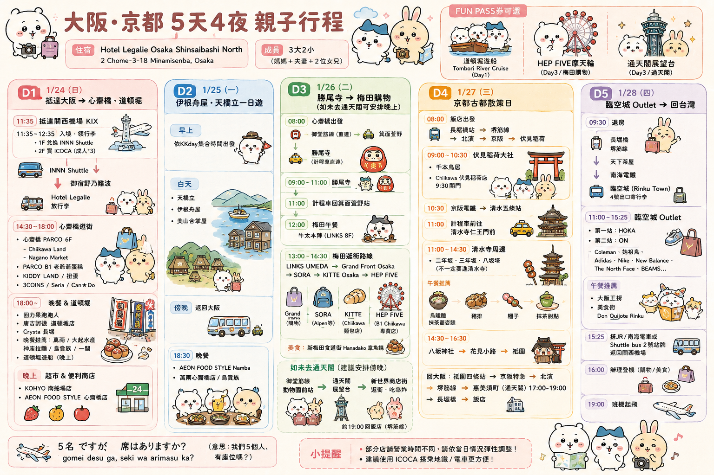
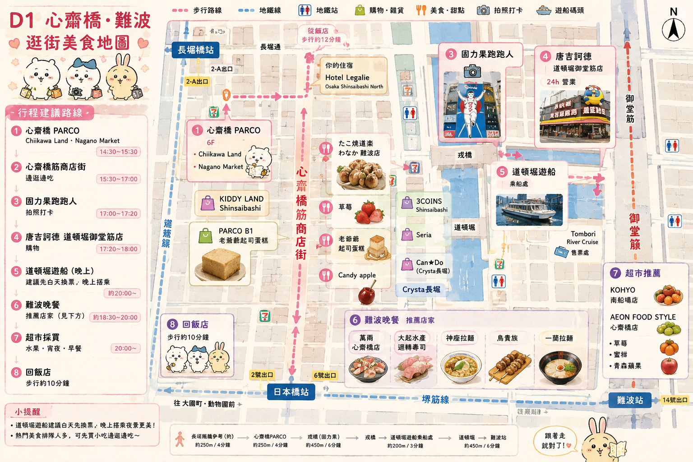
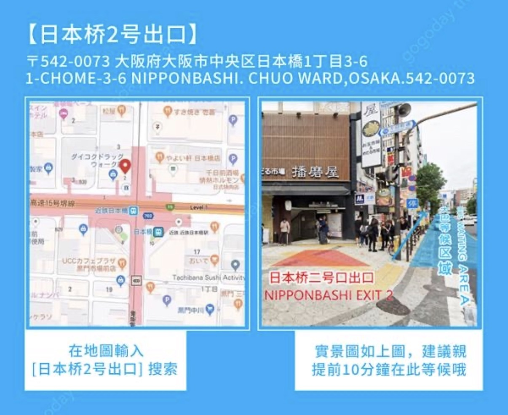
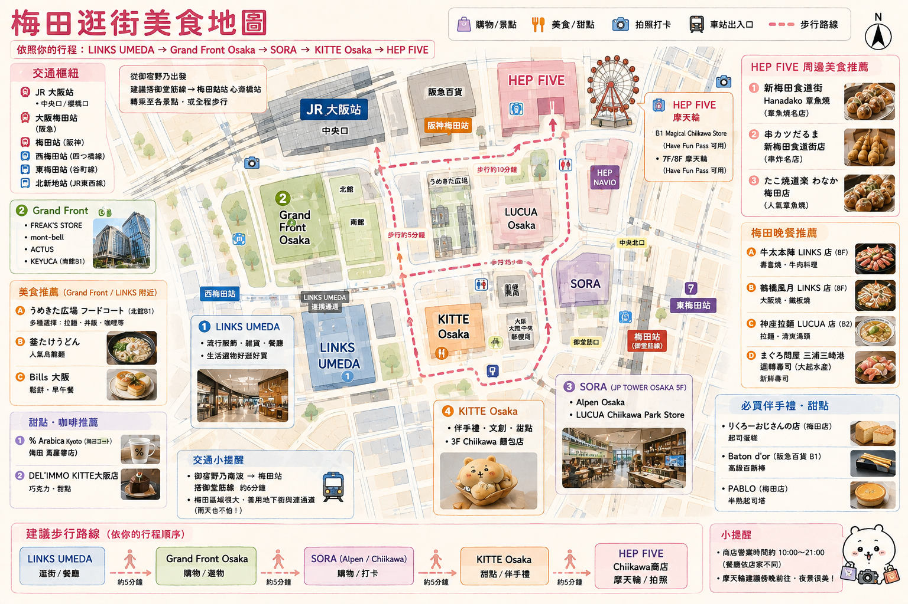
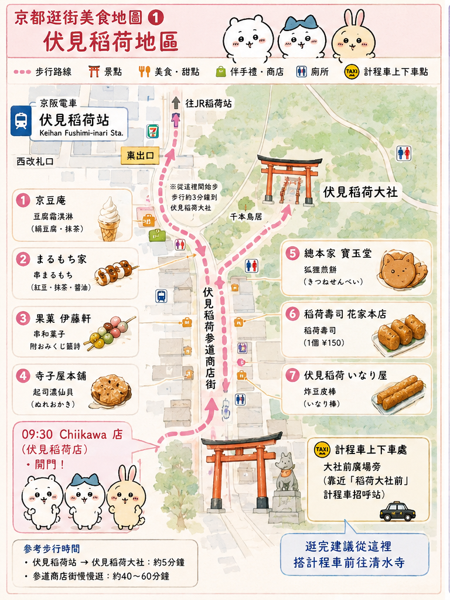
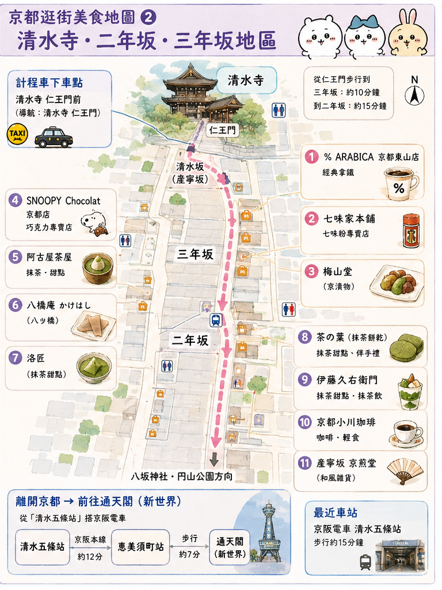
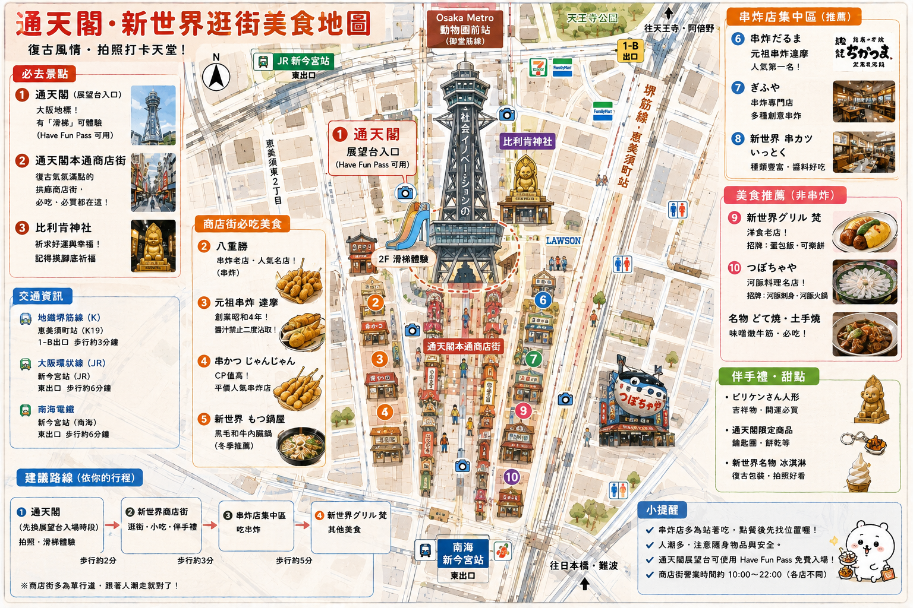

🇯🇵 大阪・京都
2027/1/24 ～ 1/28・5天4夜
3大2小
📋 5 天總行程

🔍 點圖開原圖放大
🎫 FUN PASS：
D1 ✈️ INNN Shuttle
D1 🚢 道頓堀遊船
D4 🗼 通天閣
D1｜1/24 心齋橋・難波・道頓堀
KIX → INNN Shuttle → 心齋橋 → 難波 → 道頓堀▸
Start
KIX
↓ INNN Shuttle
Hotel Legalie Osaka Shinsaibashi North
↓
心齋橋 → 難波 → 道頓堀
🗺 心齋橋／難波逛街美食地圖

🔍 點圖開原圖放大💙 D2｜1/25 伊根・天橋立・美山
KKday／GOGODAY 一日遊・07:05 日本橋站 2 號出口集合▸
06:30
飯店出發
Hotel Legalie Osaka Shinsaibashi North
Hotel Legalie Osaka Shinsaibashi North
↓ 步行
長堀橋站
↓ Osaka Metro 堺筋線（只有 1 站）
日本橋站 K17
06:50
左右抵達日本橋站 2 號出口地面
07:05
正式集合
集合地點：日本橋車站 2 號出口
集合地點：日本橋車站 2 號出口

🔍集合時請找 GOGODAY 黃色小旗。
🧭 導航到日本橋站
💚 D3｜1/26 勝尾寺・梅田
勝尾寺 → 梅田購物▸
Start
勝尾寺
↓
梅田
LINKS UMEDA → Grand Front Osaka → SORA → KITTE Osaka → HEP FIVE
LINKS UMEDA → Grand Front Osaka → SORA → KITTE Osaka → HEP FIVE
HEP FIVE 仍然是逛街行程，只是不列入 FUN PASS 使用項目。
🧭 導航到勝尾寺
🧭 導航到梅田
🗺 梅田逛街美食地圖

🔍 點圖開原圖放大🧡 D4｜1/27 京都・通天閣
伏見稻荷 → 清水寺 → 二年坂・三年坂 → 祇園 → 通天閣／新世界▸
Start
伏見稻荷
↓
清水寺 → 二年坂 → 三年坂 → 祇園
↓ 回大阪
通天閣／新世界（FUN PASS）
京都地圖分開顯示：伏見稻荷、清水寺・二年坂・三年坂、通天閣・新世界，各自獨立點擊放大。
① 伏見稻荷地區

🔍 點圖獨立放大 🧭 導航到伏見稻荷② 清水寺・二年坂・三年坂地區

🔍 點圖獨立放大 🧭 導航到清水寺③ 通天閣・新世界

🔍 點圖開原圖放大 🧭 導航到通天閣💜 D5｜1/28 臨空城・回台灣
飯店 → Rinku Premium Outlets → KIX・19:00 起飛▸
09:15
飯店出發
↓ 長堀橋 → Osaka Metro 堺筋線 → 天下茶屋
↓ 南海電鐵 → Rinku Town
10:10
約抵達臨空城，先寄放行李
🛍 主要 Outlet 品牌
HOKAON（位置待 2027 出發前確認）ColemanArc'teryxAdidasNikeNew BalanceThe North FaceBEAMS
Rinku Premium Outlets 1F
 🔍 點圖放大
🔍 點圖放大
Rinku Premium Outlets 2F／3F
 🔍 點圖放大
🔍 點圖放大
15:20
約開始往 Rinku Town 車站移動
↓ JR 或 南海電鐵
16:00
約抵達 KIX
19:00
班機起飛 ✈️
💡 點任何地圖會直接開啟原始解析度 PNG／JPG，iPhone 上可以雙指自由放大查看店名、道路與文字；看完點左上角「‹」或向右滑動即可返回。已加入主畫面、離線時，D1～D5 行程與所有地圖圖片一樣能看，只有「導航」按鈕需要網路連線。